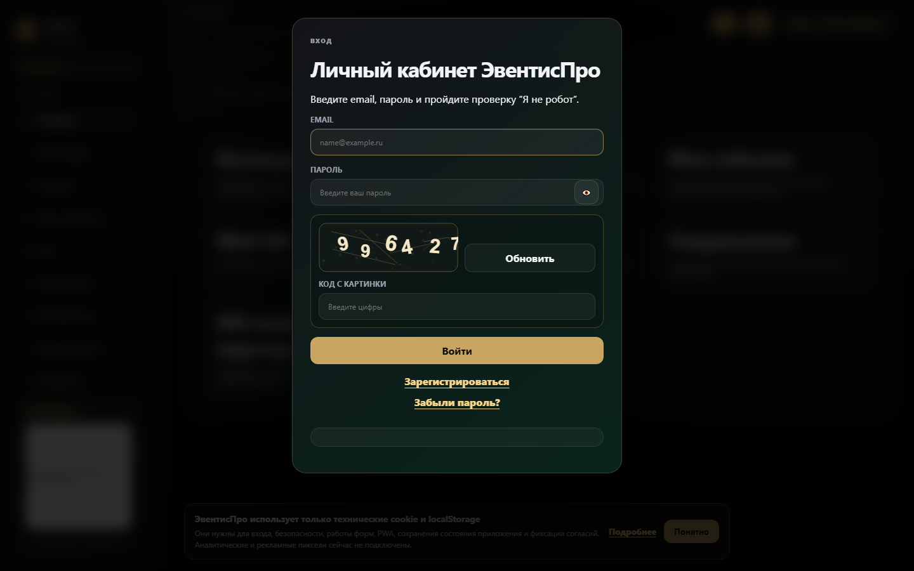
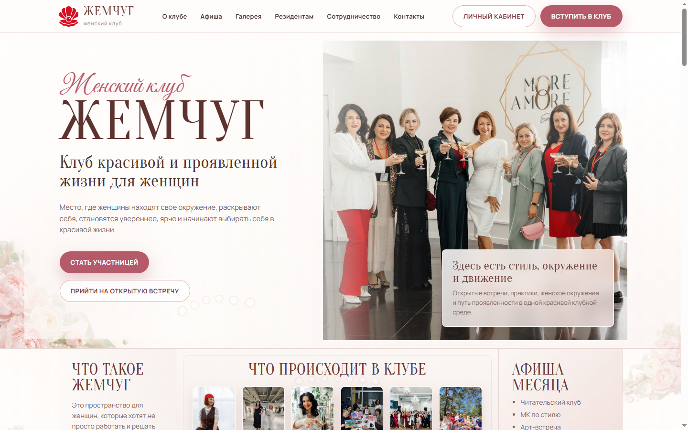
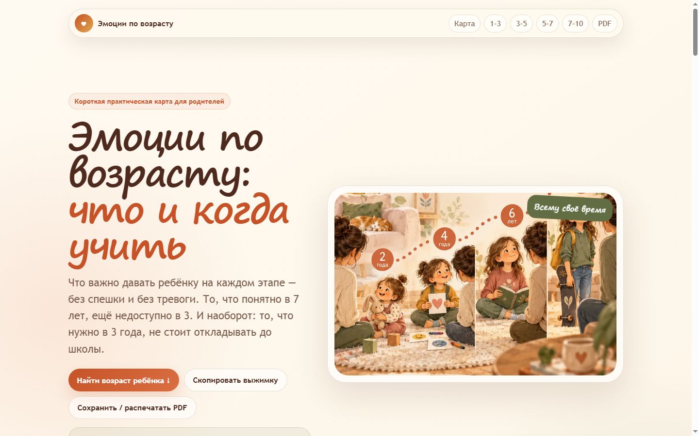
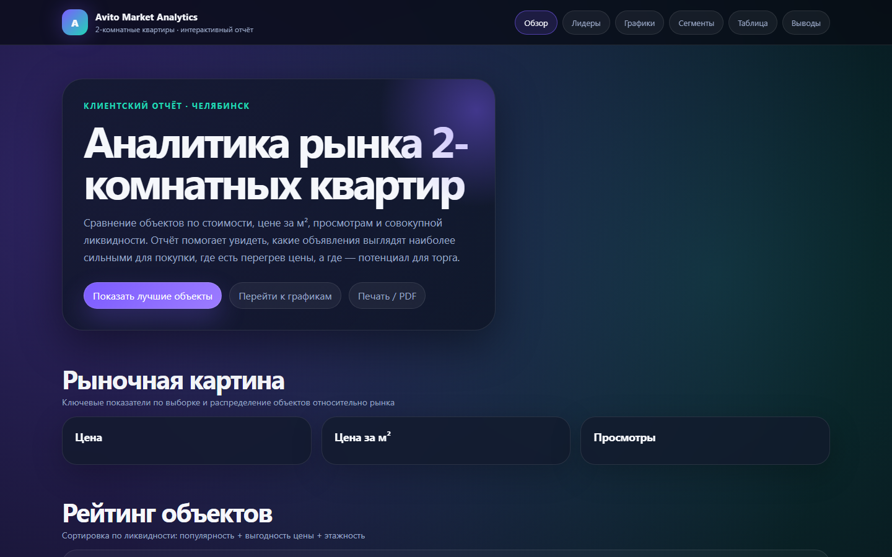

eventispro.ru

Цифровые продукты для бизнеса
Создаю сайты, приложения и помощников на базе ИИ: от идеи и дизайна до запуска и продвижения.
Можно прийти с идеей, текущим сайтом или задачей, которую пока сложно сформулировать.

Регистрация, кабинеты, билеты, оплаты и рабочие сценарии собраны в одну систему.
Можно начать с сайта или небольшой рабочей версии, а затем добавить личный кабинет, помощника на базе ИИ, отчёты и продвижение.

Структура, тексты, дизайн, адаптация, публикация.
Личные кабинеты, формы заявок, оплата и управление доступом — всё в одном месте.

Тесты, мини-игры, цифровые открытки и презентации, с которыми хочется взаимодействовать.
Помощники, которые отвечают по вашим материалам, помогают с заявками, отчётами и публикациями.
Страницы и статьи, которые помогают находить сайт в поиске, на картах и в ответах ИИ.
Хороший сайт или сервис начинается с понимания задачи: что нужно посетителю и какой результат важен для бизнеса.
В портфолио — сайты, приложения, сервисы с ИИ, отчёты и интерактивные проекты.
Платформа для мероприятий: программа, регистрация, билеты, вход по QR-коду и личные кабинеты.
Сайт и цифровая среда женского клуба — афиша, галерея, вступление, клубная подача.
Проверка сайта и ИИ-консультант, который отвечает на вопросы по материалам компании.
Сайт для риелтора с каталогом новостроек и регулярными статьями для продвижения.

Автоматизация для риелторов и интерактивный отчёт для клиента.
Приложение для почтовых рассылок: отправка писем и отчёты об открытии.
Интерактивная карта для родителей: что важно ребёнку на разных этапах взросления.
Инструмент для постов и сторис.